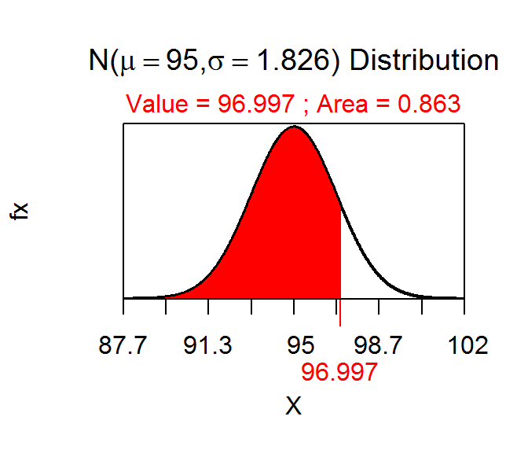

Understanding Power Relationships
- See Figure 1.
- See Figure 2.
- Effects on power
- Increasing α will INcrease power
- Increasing n will INcrease power
- Increasing σ will DEcrease power
- Increasing how wrong the H0 is will INcrease power
- Effects on β
- Increasing α will DEecrease β
- Increasing n will DEcrease β
- Increasing σ will INcrease β
- Increasing how wrong the H0 is will DEcrease β
- Power may be INcreased by INcreasing n or INcreasing α.
- β my be DEcreased by INcreasing n or INcreasing α.

Figure 1: NULL normal distribution representing the rejection region for the power calculation example.

Figure 2: ACTUAL normal distribution representing power in the power calculation example.
R Appendix.
distrib(0.05,mean=100,sd=10/sqrt(30),type="q")
distrib(96.997,mean=95,sd=10/sqrt(30))